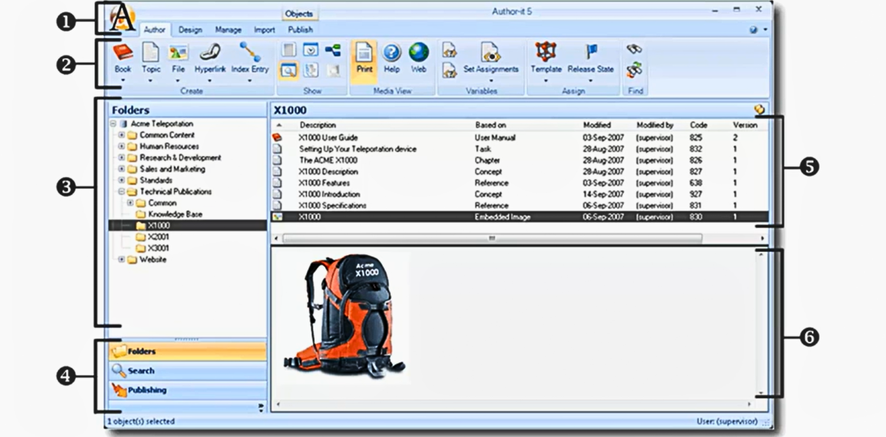

Basics of Author-it Roles and Interface
Overview of Author-it user roles, interface components, user preferences, and ribbon structure.
Main Roles in Author-it
Author-it is built around three distinct user roles, each with its own responsibilities and level of control.
- Author
- Primary Function: To create new content and reuse existing content.
- Tools: Uses styles, templates, and structure created by Designers to build and publish documents.
- Designer
- Primary Function: To support Authors and ensure design consistency.
- Key Responsibilities:
- Acts as the "architect" of the system.
- Creates and manages styles and content templates.
- Sets up and manages publishing templates (output templates).
- Defines relationships between content objects.
- Goal: To ensure all published documents follow a consistent, standard look and feel.
- Administrator
- Primary Function: To support Designers and Authors by managing the backend and security.
- Key Responsibilities:
- Manages the database and connectivity.
- Sets up the complete security model.
- Creates and manages users and groups.
- Handles system variables.
Roles, Team Size, and Security
- Team Size:
- In small teams (e.g., 5 people), one person may perform all three roles.
- In large teams (25-50 people), roles are usually specialized.
- Segregation of Roles:
- Best practice is to keep the roles separate, especially Designers/Admins vs. Authors.
- Security Model:
- Administrators have highest-level access and can perform all tasks.
- Avoid giving admin rights to general Authors to prevent unintended changes to standards or security settings.
Exploring the Author-it Interface
The Author-it interface is consistent across production and test libraries. It is composed of six main components.
Figure 1: The six main components of the Author-it interface
- Author-it Icon (“Big A”)
- Located top-left, similar to the Microsoft Office button.
- Opens application settings and other options.
- Ribbon View
- Displays functions and tools available in the library.
- Many ribbon features are also accessible via right-click shortcuts.
- Folder Pane
- Located on the left.
- Used to organize objects within the library.
- Additional Panes
- Located below the folder pane.
- Includes the Search Pane and Publishing Pane for content and output management.
- Object List
- Central area.
- Displays objects contained in the selected folder.
- Preview Area
- Located at the bottom.
- Shows a quick preview of the selected object.
- Dynamically switches based on Print, Help, and Web tabs.
Customizing Author-it Options
This section covers user roles, permissions, and key settings to optimize the workspace before authoring content.
Launching Author-it and Logging In
- Launch using desktop icon or Start menu.
- System prompts the library/database upon launch.
- Log in with a specific user account.
- Supervisor user is the default admin with full rights.
User Security
- Permissions depend on the user’s security group.
- It determines number of available actions in the interface.
Author-it Options
This is the first place a new user should configure settings.
- Accessing Options
- Click the Big A icon → select Author-it Options.
- User-Specific Settings
- These apply only to the logged-in user, not the team.
- General Settings
- Measurement units (inches, cm).
- Paste picture format (e.g., PNG recommended).
- Publishing Preferences
- Set default directory for output files (local or network location).
- Additional Tabs (Licensed Modules)
- Author-it eXtends: Suggests reusable content while typing.
- AcroCheck: Plug-in requiring extra license and training.
Exploring the Ribbons
The ribbon layout aligns with the three core Author-it roles:

Figure 2: A view of the ribbon layout in Author-it
- Author: Tools for creating and editing content.
- Design: Tools for templates, styles, and higher-level structure.
- Manage: Administrative tools for system configuration.
The other functional ribbons include:
- Import: Provides import options for formats like Word, FrameMaker, etc.
- Publishing: Shows formats for publishing a document. Only available when a Book object is selected.